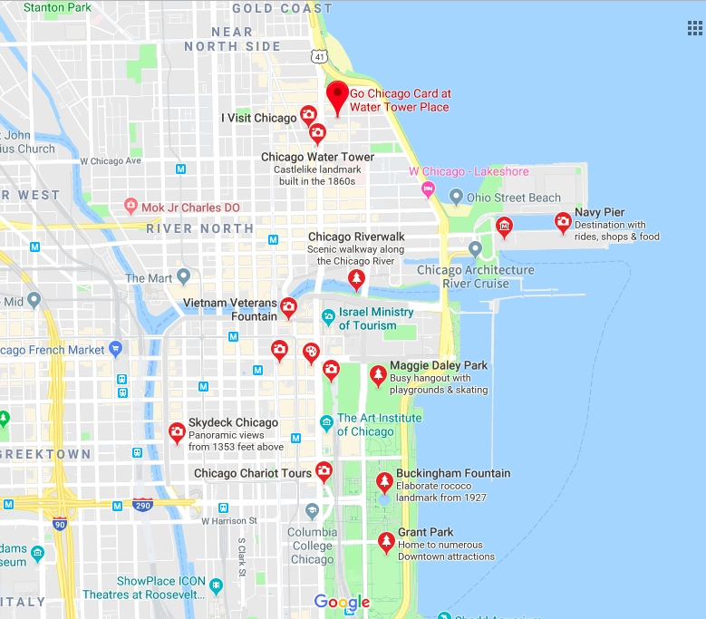

Navy Pier
It is located in the Streeterville neighborhood of the Near North Side community area.
The Navy Pier currently encompasses more than fifty acres of parks, gardens, shops,
restaurants, family attractions and exhibition facilities and is one of the top destinations
in the Midwestern United States.
Chicago Water Tower
It is located at 806 North Michigan Avenue along the Magnificent Mile shopping district
in the Near North Side community area of Chicago, Illinois in a small park, the Jane M.
Byrne Plaza. The tower was constructed to house a large water pump, intended to draw water
from Lake Michigan.
Grant Park
Located within the city's central business district, the park's most notable features are
Millennium Park, Buckingham Fountain, the Art Institute of Chicago, and the Museum Campus.
The park contains performance venues, gardens, art work, sporting, and harbor facilities.
It hosts public gatherings and several large annual events.